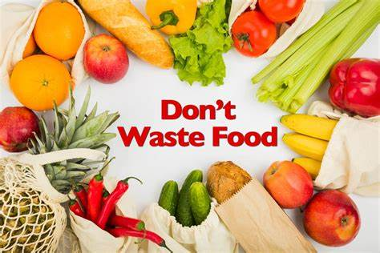
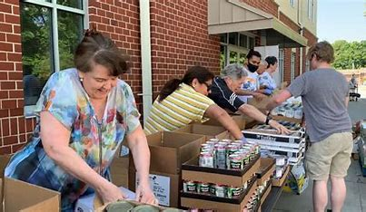

Welcome to the Food Security and Waste Reduction App
Our app connects food donors with food banks and shelters to reduce waste and improve food security.
Download NowFeatures
Real-Time Inventory Management

Manage food inventories in real-time to ensure efficient distribution and minimize waste. This feature allows food banks and shelters to keep track of available resources, providing transparency and aiding in effective food management.
Donation Scheduling
Schedule donations and coordinate logistics to streamline the process of food donation. This ensures that food is delivered timely and efficiently, reducing the chances of spoilage and ensuring that those in need receive fresh and healthy food.
Tracking and Reporting

Track food distribution and report on the impact to improve transparency and accountability. Detailed reports provide insights into the effectiveness of the food distribution process, helping to identify areas for improvement and demonstrating the positive impact of the app.
Educational Resources
Access resources on reducing food waste and promoting food security in your community. These resources include guides, best practices, and tips on how to minimize food waste, contributing to a more sustainable and food-secure society.
Benefits
Reduce Food Waste
Help reduce food waste by connecting donors with food banks and shelters. This app ensures that surplus food is redistributed to those in need rather than ending up in landfills, promoting environmental sustainability and reducing hunger.
Improve Food Distribution
Enhance food distribution to support food-insecure populations. By optimizing the logistics of food donations, the app ensures that food reaches those who need it most, improving food security and health outcomes in vulnerable communities.
Community Engagement
Engage the community in addressing food security issues and promoting sustainability. The app fosters collaboration among donors, food banks, shelters, and volunteers, creating a network of support and raising awareness about the importance of food security.